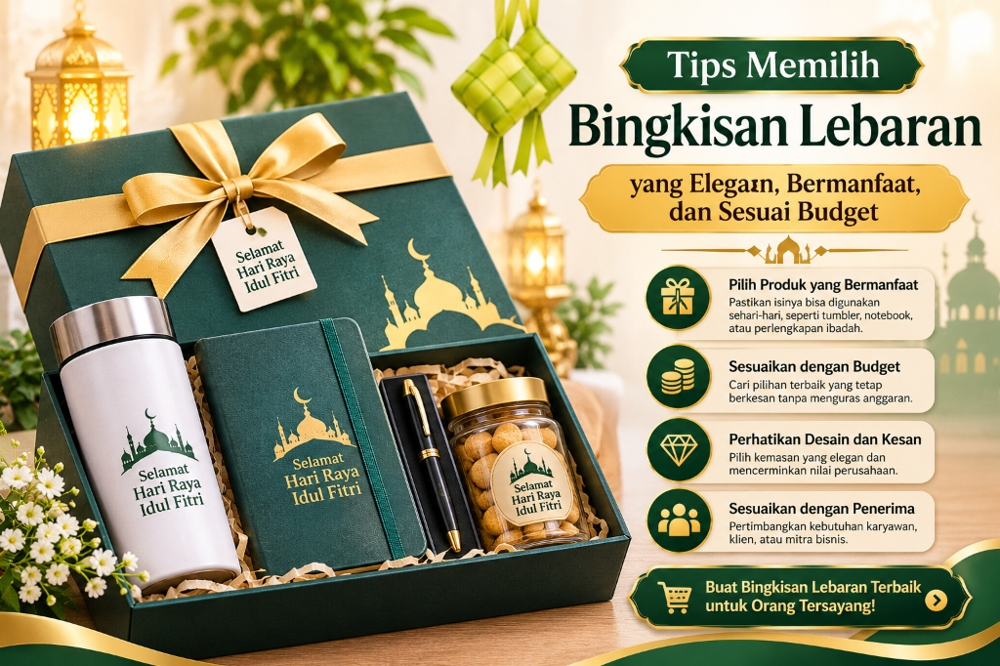

1. Ringkasan Inti Tips Memilih Bingkisan
- Pahami profil dan preferensi penerima sebelum menentukan barang yang akan dibeli.
- Tetapkan alokasi anggaran secara komprehensif, termasuk biaya kemasan dan pengiriman kurir.
- Periksa kebersihan toples, tanggal kedaluwarsa makanan, dan keutuhan segel pabrik.
- Pilih kemasan yang berukuran pas dan mampu melindungi barang selama perjalanan ekspedisi.
- Bandingkan penawaran berdasarkan spesifikasi riil barang, bukan semata-mata harga termurah.
2. Mengapa Memilih Bingkisan Lebaran Tidak Boleh Asal?
Memilih bingkisan hari raya menuntut kejelian dan empati. Hadiah yang dipilih asal-asalan berisiko tidak digunakan oleh penerima, atau bahkan mengecewakan jika kualitas makanannya kurang higienis.
Di tengah menjamurnya tawaran parcel di pasaran, pembeli yang cerdas selalu memprioritaskan manfaat nyata. Mengunjungi sentra katalog bingkisan Lebaran yang berpengalaman memudahkan Anda menemukan paket kurasi terstandarisasi dengan jaminan mutu rasa dan estetika kemasan.

Panduan 4 pilar tips memilih bingkisan Lebaran: fungsionalitas produk, penyesuaian budget, desain kemasan elegan, dan kesesuaian profil penerima.
3. Bagaimana Menentukan Bingkisan Berdasarkan Penerima?
- Untuk Keluarga & Orang Tua: Prioritaskan bahan pangan sehat (kurma, madu, sembako premium) serta perlengkapan ibadah travel yang empuk dan nyaman.
- Untuk Sahabat & Rekan Sepermainan: Barang-barang gaya hidup kasual seperti tumbler estetik, tote bag kain blacu, mug keramik, atau reed diffuser wangi ruangan.
- Untuk Karyawan Kantor: Paket kue kering toples keluarga atau perlengkapan makan yang fungsional bagi seluruh anggota keluarga di rumah.
- Untuk Klien & Relasi Bisnis: Produk berkesan eksklusif dalam kotak hardbox berlogo rapi yang mencerminkan etika profesionalisme tinggi.
4. Bagaimana Menentukan Budget Bingkisan Lebaran?
Kendalikan pengeluaran dengan membagi anggaran ke dalam tiga kategori utama:
1. Bingkisan Lebaran Ekonomis (< Rp 100.000)
Fokus pada satu atau dua produk fungsional utama, seperti 1 toples nastar nanas asli (250gr) dan sajadah travel saku dalam tas canvas jinjing. Kemasan tetap manis dengan pita satin dan kartu ucapan.
2. Bingkisan Lebaran Menengah (Rp 100.000 – Rp 250.000)
Memadukan beberapa produk pelengkap, misalnya 2 toples kue kering wisman + tumbler vacuum stainless steel atau paket kurma Medjool + teh herbal artisan dalam besek bambu modern.
3. Bingkisan Lebaran Premium (> Rp 250.000)
Menonjolkan kemewahan unboxing experience. Dikemas dalam rigid hardbox beludru emas dengan isi lengkap kue kering butter, mukena sutra, reed diffuser, dan kartu ucapan hardcover.
5. Apa Saja Isi Bingkisan Lebaran yang Bermanfaat?
🍪 Makanan & Kudapan Sehat
Nastar wisman, kastengel keju, kurma Ajwa Medinah, madu hutan, dan cokelat artisan.
🍽️ Perlengkapan Dapur & Meja
Set peralatan makan kayu, toples kaca kedap udara, cangkir teh keramik, dan piring saji.
👜 Aksesori Lifestyle
Tumbler vacuum tahan panas/dingin, tote bag kain canvas, pouch kulit, dan notebook agenda.
🕌 Perlengkapan Ibadah
Sajadah travel waterproof, mukena katun sutra, sarung tenun berkualitas, dan tasbih digital.
6. Bagaimana Memilih Bingkisan Lebaran yang Elegan?
Kesan elegan tidak diukur dari harga mahal, melainkan dari keharmonisan desain visual:
- Konsistensi Tema Warna: Gunakan palet warna netral dan bersahaja (earth tone) seperti hijau sage, krem vanilla, putih tulang, dan aksen emas muda.
- Proporsi Wadah yang Pas: Jangan gunakan kotak terlalu longgar yang membuat isi terlihat tenggelam. Gunakan sekat karton atau potongan kertas (shredded paper) agar isi tertata padat dan rapi.
- Aksen Pengikat Manis: Pita satin lembut, hangtag kaligrafi islami, atau segel lilin stempel (wax seal) memberikan sentuhan mewah tanpa menambah banyak biaya.
7. Bagaimana Memeriksa Kualitas Produk Sebelum Membeli?
Selalu lakukan pengecekan ketat:
- Periksa tanggal kedaluwarsa kue kering minimal 3–6 bulan ke depan.
- Pastikan segel toples plastik atau kaleng dalam keadaan utuh tanpa rembesan minyak.
- Untuk barang pecah belah, periksa kehalusan glasir keramik dan ketiadaan retakan halus.
- Untuk produk berlogo, pastikan warna sablon atau kedalaman grafir laser presisi dan tidak mudah terkelupas.
8. Tabel Perbandingan Paket Hampers Murah vs Premium
| Faktor Penilaian | Paket Ekonomis | Paket Premium VIP |
|---|---|---|
| Isi Produk | Produk kebutuhan pokok atau kombinasi 1–2 barang fungsional | Produk pilihan kurasi gourmet dengan cita rasa & material eksklusif |
| Jenis Kemasan | Besek anyaman bambu, tas canvas, atau kraft box ramah lingkungan | Rigid hardbox beludru emas, kotak akrilik, atau wooden box |
| Personalisasi | Kartu ucapan kaligrafi atau stiker segel toples bernuansa Lebaran | Laser grafir nama/logo, sleeve box custom, dan kartu hardcover |
| Target Penerima | Pembagian massal, staf operasional, jamaah pengajian, atau tetangga | Jajaran pimpinan instansi, klien VIP, mertua, dan mitra strategis |
| Pertimbangan Utama | Efisiensi biaya dan manfaat guna harian | Pengalaman unboxing mewah dan penguatan citra prestisius |
Untuk melihat implementasi nyata dari kedua kategori di atas, Anda dapat membandingkan katalog Paket Hemat dan Paket Premium VIP kami.
9. Apa yang Perlu Diperhatikan Saat Memesan Bingkisan Custom?
Pemesanan custom memerlukan persetujuan spesifikasi tertulis mengenai dimensi boks, warna bahan kain, toleransi warna cetak logo, serta estimasi masa simpan kue. Selalu minta bukti mockup digital atau sampel fisik nyata sebelum memberi izin produksi massal.
10. Kapan Waktu yang Tepat untuk Memesan Bingkisan Lebaran?
Waktu paling ideal adalah 4 hingga 6 minggu sebelum Idulfitri. Memesan lebih awal memberikan ketenangan saat proses proofing desain logo dan memastikan paket tiba sebelum kerabat atau karyawan Anda memulai perjalanan mudik ke kampung halaman.
11. Kesalahan yang Perlu Dihindari Saat Memilih Bingkisan
- Terpaku Hanya pada Harga Termurah: Menghiraukan rasa kue dan ketahanan wadah demi mengejar harga murah sering berujung malu saat hadiah diterima kerabat.
- Memasukkan Terlalu Banyak Barang Acak: Paket yang dijejali aneka barang tidak serasi justru terkesan murah dan berantakan.
- Lupa Menghitung Biaya Pengiriman: Paket berdimensi besar terkena hitungan berat volumetrik kargo yang dapat melipatgandakan total tagihan.
12. Pertanyaan yang Sering Diajukan (FAQ)
13. Kesimpulan & Saran Praktis
Memilih bingkisan Lebaran yang berkesan adalah tentang kejelian memadukan kebutuhan penerima, kebersihan mutu makanan, estetika wadah kemasan, dan disiplin pengelolaan anggaran. Bingkisan yang disiapkan dengan penuh ketelitian akan menjadi bingkisan terindah yang menghangatkan silaturahmi Idulfitri.
Silakan pelajari lebih banyak rujukan pada panduan utama bingkisan Lebaran, baca ide bingkisan keluarga, atau kunjungi langsung halaman beranda Souvenir Lebaran untuk konsultasi paket hampers hari raya Anda.